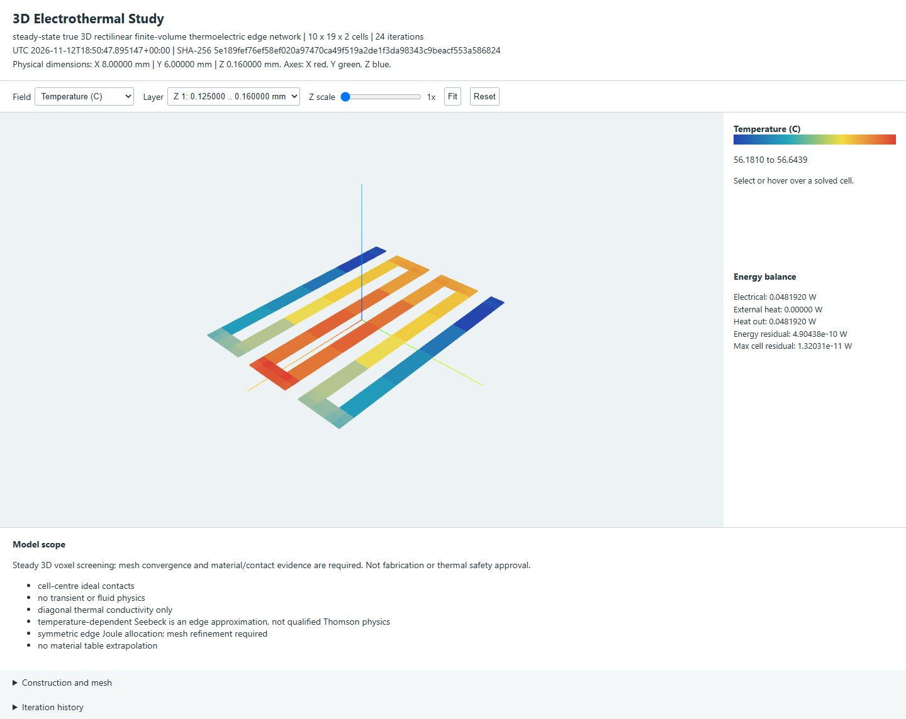

One shared numerical kernel, study format and offline viewer for Heater Designer, Quick PI, Quick SI and QuickTherm. Planar Magnetics also reuses QuickTherm's layer-resolved kernel for winding-loss studies. Studies do not modify a PCB.
The embedded and exported viewer use the same solved samples. Drag rotates, right-drag pans and the wheel zooms; Fit and Reset restore the view. Select a physical Z layer and temperature, voltage or volumetric Joule density. Hover probes show original cell bounds in millimetres, temperature in C, potential in V, cell heating in W and current-density components in A/m2. Void/insulating cells do not acquire invented electrical values. Z exaggeration changes display only and is explicitly labelled.

This is a steady 3D rectilinear finite-volume network, not a surface field stretched into 3D. Cells can have different X/Y/Z dimensions and diagonal thermal conductivities. Electrical and thermal face conductances use their two half-cell resistances in series. Temperature-dependent resistivity tables are interpolated without extrapolation; a reviewed linear TCR is an alternative.
I(i to j) = g [Vi - Vj + Sbar (Ti - Tj)] Heat into i = K (Tj - Ti) + I^2/(2g) - Sbar Ti I Heat into j = K (Ti - Tj) + I^2/(2g) + Sbar Tj I Sum of edge heating = I (Vi - Vj)
Temperatures in the thermoelectric terms are kelvins, g is siemens, K is W/K and S is V/K. Joule heat is irreversible; Seebeck/Peltier terms reverse with current and retain the Kelvin relation Pi = S T. No coefficient is guessed from a metal name. The heater adapter requires reference/lead evidence before enabling Seebeck. An ideal zero-Seebeck reservoir is not an unknown physical lead.
A temperature-dependent Seebeck coefficient is supported as a conservative edge approximation. It is not a qualified continuum Thomson solver. Symmetric edge Joule allocation, coefficient averaging, ideal cell-centre contacts and voxel corners require refinement and reference validation.
| Input | Required evidence |
|---|---|
| Copper / resistance alloys | Actual grade, bulk resistivity, thickness, R(T) or TCR and thermal conductivity. Nikrothal 80 and INCONEL 600 retain their tabulated electrical corrections; nominal thermal properties at 20 C are not full high-temperature conductivity curves. |
| Thick / thin resistive film | Measured sheet resistance and physical film thickness, thermal conductivity and temperature correction. The effective bulk resistivity is sheet resistance times film thickness; film chemistry is not inferred. |
| Flex / rigid-flex | Actual polymer, adhesive, coverlay and stiffener regions. Editable rectangular regions can represent local thickness changes. Mechanical bend strain, delamination and interface/contact resistance are not inferred. |
| Multilayer and vias | The generic solid study can represent explicit volumetric conductive connections. Automatic heater meshing currently supports one foil layer; it rejects unmodelled via barrels rather than replacing them with solid columns. |
python -m heater_designer_plugin.thermal3d study.json --output result.json --html report.html wayricad-pi --thermoelectric-3d study.json --output result.json --html report.html wayricad-therm --thermoelectric-3d study.json --output result.json --html report.html wayricad-si thermal-3d study.json --output result.json --html report.html wayricad-si thermal-feedback route.json --thermal result.json --template --output mapping.json wayricad-si thermal-feedback route.json --thermal result.json --mapping mapping.json --output dc-feedback.json
SI feedback requires explicit reviewed XYZ samples for every original route section and source identities for both reports. It changes DC resistance using the declared conductor TCR; it does not re-solve impedance, dielectric drift, skin/proximity effects or an RF channel. Declared I-squared-R loss is a DC/low-frequency screen. Existing PI/QuickTherm board models retain their own geometry and source bindings; opening a generic solid study does not silently voxelize the current board.
Thermoelectric effect theory and two-port heat/current balance provide equation references, not validation of this implementation. Material records retain their own manufacturer references and conditions.